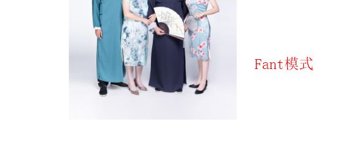
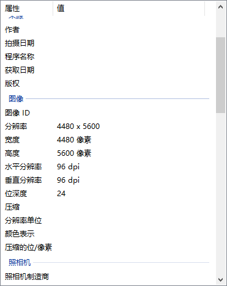

https://www.cnblogs.com/Big-Head/p/12068230.html
视觉处理（控件展示）
显示图片
Image 控件展示
1
2
|
<Image source="/Resources/Images/1.png"/>
|
缩放位图渲染算法
1
2
|
<Image Source="/Resources/Images/1.jpg" RenderOptions.BitmapScalingMode="Fant"/>
|

| 枚举值 |
描述 |
| Fant |
使用超高质量 Fant 位图缩放，虽然速度比所有其他位图缩放模式都慢，但输出质量更高。 |
| HighQuality |
使用高质量位图缩放，虽然速度比 LowQuality 模式慢，但输出质量更高。 HighQuality 模式与 Fant 模式相同。 |
| Linear |
使用线性位图缩放，虽然速度比 HighQuality 模式快，但输出质量较低。 |
| LowQuality |
使用双线性位图缩放，虽然速度比 HighQuality 快，但输出质量较低。 LowQuality 模式与 Linear 模式相同。 |
| NearesNeighbor |
使用最近邻域位图缩放，当使用软件光栅器时，该缩放提供优于 LowQuality 模式的性能。 该模式常用于放大位图。 |
| Unspecified |
使用默认位图缩放模式，即 Linear。 |
Image 遮罩
来自微软官方的说明：
获取或设置一个作为 Brush 实现的不透明蒙板，该蒙板可应用到此元素所呈现内容的任何 Alpha 通道蒙板。 这是依赖项属性。
来自个人的经验解释：
OpacityMask 也是一张图片，它用来改变被它遮住的内容的显示区域
OpacityMasK 本身：有内容的区域被镂空，没有内容的区域被填充
被它遮住的控件或者画布：镂空的区域就展示，填充的区域变透明
图片 DPI
- 图片 DPI 是每英寸显示的点的个数（点/英寸）
- 图片的宽像素 = 宽 dpi * 尺寸
- 图片的高像素 = 高 dpi * 尺寸
- WPF 中，所有图片在 Xaml 中都会被强制拉成 96 dpi。

来自微软官方的说明：
Transform 定义如何将点从一个坐标空间映射或转换到另一个坐标空间。 此映射由转换 Matrix描述，该转换是包含三列 Double 值的三行的集合。
| 枚举值 |
描述 |
| RotateTransform |
按指定角度旋转元素。 |
| ScaleTranform |
按指定的 ScaleX 和 ScaleY 量来缩放元素。 |
| SkewTransform |
按指定的 AngleX 和 AngleY 量倾斜元素。 |
| TranslateTransform |
按指定的 X 和 Y 量移动（平移）元素。 |
1
2
3
4
5
6
7
8
9
10
11
|
<Image Width="450" Source="/Images/3.jpg">
<Image.RenderTransform>
<TransformGroup>
<TranslateTransform X="10" Y="10" />
<RotateTransform Angle="20" CenterX="200" CenterY="121"/>
<ScaleTransform ScaleX="1.5" ScaleY="1.5" CenterX="200" CenterY="121"/>
<SkewTransform AngleX="10" AngleY="10" CenterX="200" CenterY="121"/>
</TransformGroup>
</Image.RenderTransform>
</Image>
|
输出文件
显示图片
BitmapImage 的保存
与 Bitmap.Save() 不同，需要对 BitmapImage 的数据转为 Stream，通过文件流保存
1
2
3
4
5
6
7
|
BitmapEncoder encoder = new PngBitmapEncoder();
encoder.Frame.Add(BitmapFrame.Create(bitmapImage));
using(var stream=new FileStream(path, FileMode.Create))
{
encoder.Save(stream);
}
|
BitmapImage 的 Width, Height 和 PixelWidth, PixelHeight
Width 和 Height：获取位图的宽/高度（以与设备无关的单位（每个单位 1/96 英寸）为单位）。（会根据电脑 DPI 的更改获取到不同的值）
PixelWidth 和 PixelHeight：获取位图的宽/高度（以像素为单位）
BitmapImage 与 Bitmap 的互相转换
同样是转为流数据，向Bitmap的构造函数传参
1
2
3
4
5
6
7
8
9
10
11
12
13
14
15
16
17
18
19
20
21
22
23
24
25
26
27
28
29
30
31
32
33
34
35
36
37
38
39
|
public static Bitmap GetBitmapByBitmapImage(this BitmapImage bitmapImage,bool isPng=false)
{
Bitmap bitmap;
MemoryStream outStream = new MemoryStream();
BitmapEncoder enc = new BmpBitmapEncoder();
if (isPng)
{
enc = new PngBitmapEncoder();
}
enc.Frames.Add(BitmapFrame.Create(bitmapImage));
enc.Save(outStream);
bitmap = new Bitmap(outStream);
return bitmap;
}
public static BitmapImage GetBitmapImageBybitmap(this Bitmap bitmap)
{
BitmapImage bitmapImage = new BitmapImage();
try
{
using (MemoryStream ms = new MemoryStream())
{
bitmap.Save(ms, System.Drawing.Imaging.ImageFormat.Png);
bitmapImage.BeginInit();
bitmapImage.StreamSource = ms;
bitmapImage.CacheOption = BitmapCacheOption.OnLoad;
bitmapImage.EndInit();
bitmapImage.Freeze();
}
}
catch (Exception ex)
{
log.ErrorFormat("bitmap to BitmapImage Failed:" + ex.Message);
}
return bitmapImage;
}
|
Visual 和 DrawingContext
Visual
Visual：为 WPF 中的呈现提供支持，其中包括命中测试、坐标转换和边界框计算。
层级关系：
System.Windows.Media.Visual
System.Windows.Media.ContainerVisual
System.Windows.UIElement
DrawingContext
DrawingContext：使用绘图、推送和弹出命令描述可视内容。
绘制方法：
- DrawDrawing：画 Drawing 对象
- DrawEllipse：画圆
- DrawGeometry：画几何图形
- DrawGlyphRun：画文字
- DrawImage： 画图
- DrawLine：画线
- DrawRectangle / DrawRoundedRectangle：画矩形
- DrawText：画带格式的文本
- DrawVideo：画视频
- PushClip：推送剪切区域
RenderTargetBitmap
RenderTargetBitmap：将 System.Windows.Media.Visual 对象转换为位图。
Image 遮罩
和控件方式类似，在后台代码中使用 Visual 来展示
1
2
3
4
5
6
7
8
|
RenderTargetBitmap bmp = new RenderTargetBitmap((int)img.Source.Width, (int)img.Source.Height, 96, 96, PixelFormats.Default);
DrawingVisual visual = new DrawingVisual() { OpacityMask = imgBrush };
using (DrawingContext dc = visual.RenderOpen())
{
dc.DrawImage(img.Source, new Rect(0, 0, img.Source.Width, img.Source.Height));
}
bmp.Render(visual);
|
图像变化
同样是修改 Visual 的 Transform
这里注意：文件渲染的 Transform 和前台的 Transform 不全相同！
因为界面显示的图片大小和实际大小不一样
1
2
3
4
5
6
7
8
9
|
Copy
RenderTargetBitmap bmp = new RenderTargetBitmap((int)img.Source.Width, (int)img.Source.Height, 96, 96, PixelFormats.Default);
DrawingVisual visual = new DrawingVisual() { Transform = img.RenderTransform };
using (DrawingContext dc = visual.RenderOpen())
{
dc.DrawImage(img.Source, new Rect(0, 0, img.Source.Width, img.Source.Height));
}
bmp.Render(visual);
|
PathGeometry
来自微软官方的解释：表示一个可能由弧、曲线、椭圆、直线和矩形组成的复杂形状
LineGeometry 直线
PS：这个 LineGeometry 可以实现线头和线尾的圆滑笔触效果
EllipseGeometry 圆
RectangleGeometry 矩形
1
2
|
new LineGeometry(start, end).GetWidenedPathGeometry(new Pen(Brushes.Black, 10) { StartLineCap = PenLineCap.Round, EndLineCap = PenLineCap.Round });
|
抠图
通过 DrawingContext 的 PushClip 可以将指定的剪辑区域推送到绘图上下文上。
需要利用到上面的 Geometry 几何图形
配合一些鼠标事件可以手动实现 inkcanvas 和类似 PS 的背景橡皮擦
1
2
3
4
5
6
7
8
9
10
11
|
RenderTargetBitmap bmp = new RenderTargetBitmap((int)img.Source.Width, (int)img.Source.Height, 96, 96, PixelFormats.Default);
DrawingVisual visual = new DrawingVisual() { OpacityMask = imgBrush };
using (DrawingContext dc = visual.RenderOpen())
{
RectangleGeometry full = new RectangleGeometry(new Rect(0,0,777,523));
var clip= Geometry.Combine(full, new RectangleGeometry(new Rect(200,200,300,300)), GeometryCombineMode.Exclude, null);
dc.PushClip(clip);
dc.DrawImage(img.Source, new Rect(0, 0, img.Source.Width, img.Source.Height));
}
bmp.Render(visual);
|
正方形抠图
线条抠图
裁剪
- BitmapSource 中有一个方法叫做 CopyPixels，复制像素点集到一个新的 BitmapSource 里面。可以实现裁剪
stride：位图的跨距（一行的字节数）。
pixels：表示位图图像内容的字节数组。
1
2
3
4
5
6
7
8
9
10
11
|
public static BitmapSource CutImage(BitmapSource bitmapSource, Int32Rect cut)
{
var stride = bitmapSource.Format.BitsPerPixel * cut.Width / 8;
byte[] data = new byte[cut.Height * stride];
bitmapSource.CopyPixels(cut, data, stride, 0);
return BitmapSource.Create(cut.Width, cut.Height, 0, 0, PixelFormats.Bgra32, null, data, stride);
}
|

{kind=link}
{kind=link}
{kind=link}
{kind=link}
{kind=link}
{kind=link}
{kind=link}
{kind=link}
{kind=link}